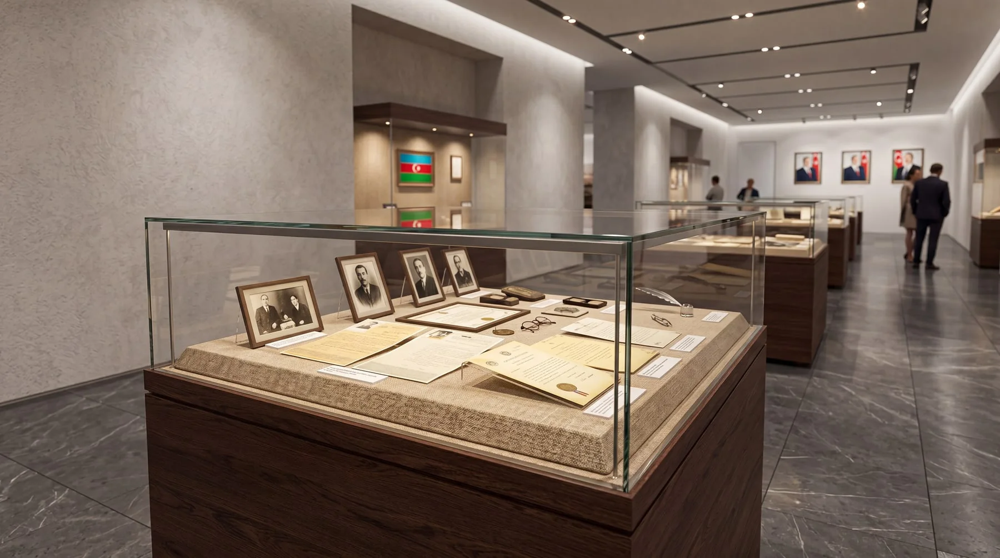

Sergileme Tasarımı
2026 · Sistem Tasarımı
Tek bir dil, yedi farklı vitrin
Belge, tekstil, gemi modeli, saat, vazo ve kostüm gibi ölçeği ve hassasiyeti birbirinden çok farklı eserleri tek bir tasarım dili altında toplayan bir vitrin ailesi. Farklı sergileme ihtiyaçları ortak bir kaide ve profil sistemine indirgendi.
Ceviz kaide, ince çerçeveli temperli cam ve kaideye entegre lineer aydınlatma her tipte tekrar eder. Böylece galeri boyunca görsel süreklilik kurulurken eser her zaman kompozisyonun odağında kalır.





Yedi tipin tamamı aynı ceviz kaide ve çerçeve profilinden türetildi. Üretimde parça çeşitliliği azalır, galeride aile kimliği okunur.
Her tip, eserin izlenme yüksekliği ve yaklaşma mesafesine göre kurgulandı: duvar vitrinleri belge ve tekstil için, masa vitrinleri model için, sütunlar çevresinden dolaşılan tekil eserler için.
Işık kaynağı kaide ve üst profilin içinde gizlenir. Eser gölgesiz aydınlanırken ziyaretçi ışık kaynağını görmez.
Malzeme, oran ve ışık her tipte tekrarlandığı için farklı boydaki vitrinler bir arada kullanıldığında tek bir sistem gibi okunur.